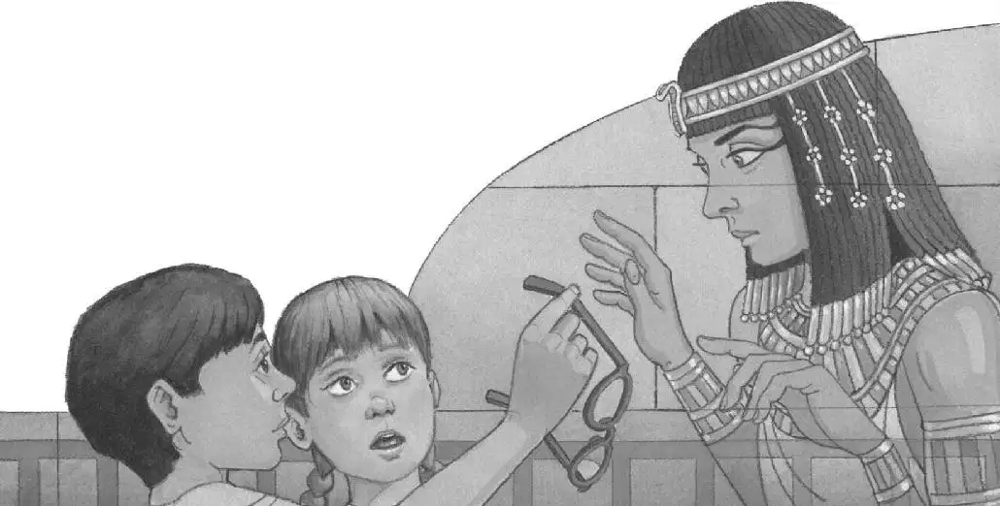

“A ghost,” Annie whispered.
Jack could only stare in horror.
The ghost began to speak. She spoke in a hollow, echoing voice.
“I am Hutepi,” she said. “Queen of the Nile. Have you come to help me?”
Jack still couldn’t speak.
“Yes,” said Annie.
“For a thousand years,” said the ghost-queen, “I have waited for help.”
Jack’s heart was pounding so hard he thought he might faint.
“Someone must find my Book of the Dead,” she said. “I need it to go on to the Next Life.”
“Why do you need the Book of the Dead?” asked Annie. She didn’t sound scared at all.
“It will tell me the magic spells I need to get through the Underworld,” said the ghost-queen.
“The Underworld?” said Annie.
“Before I journey on to the Next Life, I must pass through the horrors of the Underworld.”
“What kinds of horrors?” Annie asked.
“Poisonous snakes,” said the ghost-queen. “Lakes of fire. Monsters. Demons.”
“Oh.” Annie stepped closer to Jack.
“My brother hid the Book of the Dead so tomb robbers would not steal it,” said the ghost-queen. “Then he carved this secret message on the wall, telling me how to find it.” She pointed to the wall.
Jack was still in shock. He couldn’t move.
“Where?” Annie asked her. “Here?” She squinted at the wall. “What do these tiny pictures mean?”
The ghost-queen smiled sadly. “Alas, my brother forgot my strange problem. I cannot see clearly that which is close to my eyes. I have not been able to read his message for thousands of years.”
“Oh, that’s not strange,” said Annie. “Jack has the same problem. That’s why he wears glasses.”

The ghost-queen stared in wonder at Jack.
“Jack, lend her your glasses,” said Annie.
Jack took his glasses off his nose. He held them out to the ghost-queen.
She backed away from him. “I cannot wear your glasses, Jack,” she said. “As you can see, I am made of air.”
“Oh, I forgot,” said Annie.
“But perhaps you will describe the hieroglyphs on this wall,” said the ghost-queen.
“Hi-ro-who?” said Annie.
“Hieroglyphs!” said Jack, finally finding his voice. “It’s the ancient Egyptian way of writing. It’s like writing with pictures.”
The ghost-queen smiled at him. “Thank you, Jack,” she said.
Jack smiled back at her. He put his glasses on. Then he stepped toward the wall and took a good long look.
“Oh, man,” he whispered.